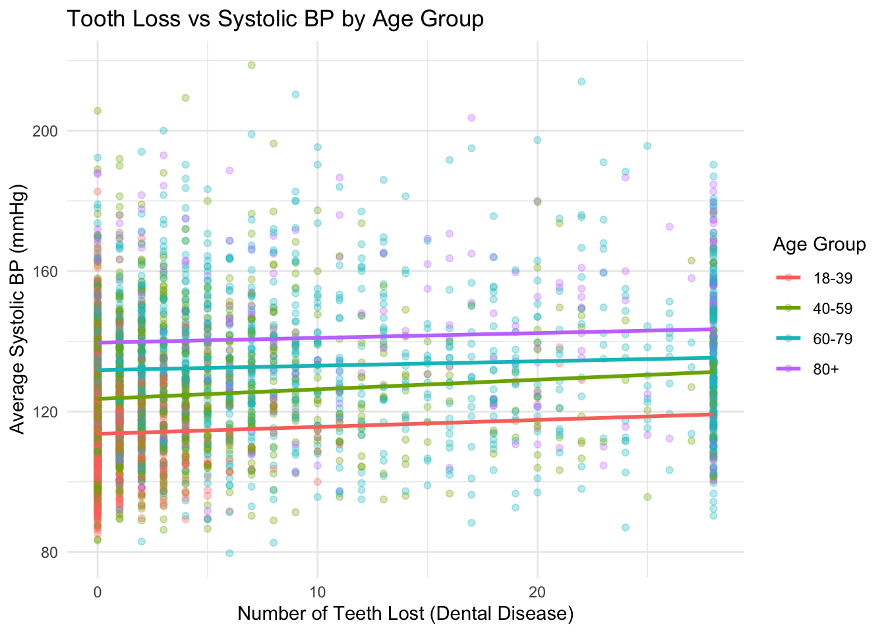
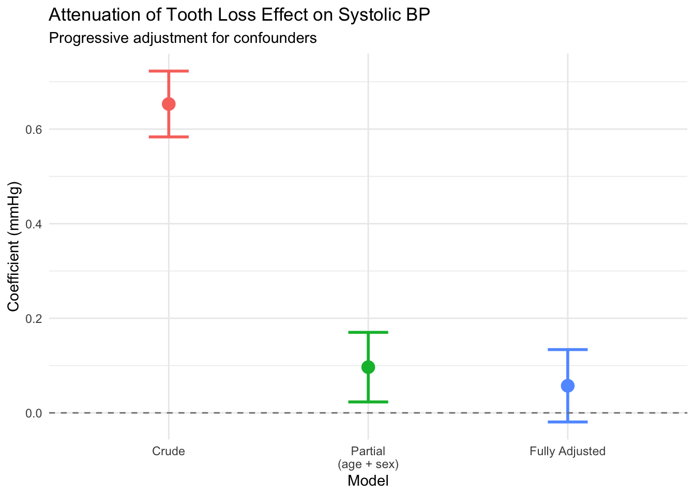

Portfolio 3
2026-01-27
Happy Teeth, Happy Heart!
According to the American Heart Association, oral health, especially periodontal (gum) disease is independently associated with markers of cardiovascular disease. Here, I sought to use data from the National Health and Nutrition Examination Survey to replicate these findings.
![Source: Altima Dental. (2020, July 6). Does a healthy mouth mean a healthy heart? [Infographic]. <https://www.altimadental.com/does-a-healthy-mouth-mean-a-healthy-hearrt](Images/Cardiographicwide2.jpg)
Source: Altima Dental. (2020, July 6). Does a healthy mouth mean a healthy heart? [Infographic]. https://www.altimadental.com/does-a-healthy-mouth-mean-a-healthy-hearrt</p
2017 - 2018 Data
NHANES data from 2019-2020 is limited access, and 2020-2023 encountered issues due to the Covid-19 Pandemic. Thus, I began by exploring the most recent dataset that included information about oral health.
## ── Attaching core tidyverse packages ──────────────────────── tidyverse 2.0.0 ──
## ✔ dplyr 1.1.4 ✔ readr 2.1.6
## ✔ forcats 1.0.1 ✔ stringr 1.6.0
## ✔ ggplot2 4.0.2 ✔ tibble 3.3.1
## ✔ lubridate 1.9.5 ✔ tidyr 1.3.2
## ✔ purrr 1.2.1
## ── Conflicts ────────────────────────────────────────── tidyverse_conflicts() ──
## ✖ dplyr::filter() masks stats::filter()
## ✖ dplyr::lag() masks stats::lag()
## ℹ Use the conflicted package (<http://conflicted.r-lib.org/>) to force all conflicts to become errorsdemo <- nhanes('DEMO_J')
bpx <- nhanes('BPXO_J')
hdl <- nhanes('HDL_J')
trig <- nhanes('TRIGLY_J')
bpq <- nhanes('BPQ_J')
smq <- nhanes('SMQ_J')
bmx <- nhanes('BMX_J')
ohxden <- nhanes('OHXDEN_J')Note that SEQN is the participant identifier.
merged <- demo %>%
left_join(ohxden, by = "SEQN") %>%
left_join(bpx, by = "SEQN") %>%
left_join(hdl, by = "SEQN") %>%
left_join(trig, by = "SEQN") %>%
left_join(bpq, by = "SEQN") %>%
left_join(smq, by = "SEQN") %>%
left_join(bmx, by = "SEQN")
nrow(merged)## [1] 9254## [1] 304See the code output for the head and names of the DF
``` r
head(merged)
```
```
## SEQN SDDSRVYR RIDSTATR
## 1 93703 NHANES 2017-2018 public release Both interviewed and MEC examined
## 2 93704 NHANES 2017-2018 public release Both interviewed and MEC examined
## 3 93705 NHANES 2017-2018 public release Both interviewed and MEC examined
## 4 93706 NHANES 2017-2018 public release Both interviewed and MEC examined
## 5 93707 NHANES 2017-2018 public release Both interviewed and MEC examined
## 6 93708 NHANES 2017-2018 public release Both interviewed and MEC examined
## RIAGENDR RIDAGEYR RIDAGEMN RIDRETH1
## 1 Female 2 NA Other Race - Including Multi-Racial
## 2 Male 2 NA Non-Hispanic White
## 3 Female 66 NA Non-Hispanic Black
## 4 Male 18 NA Other Race - Including Multi-Racial
## 5 Male 13 NA Other Race - Including Multi-Racial
## 6 Female 66 NA Other Race - Including Multi-Racial
## RIDRETH3 RIDEXMON RIDEXAGM
## 1 Non-Hispanic Asian May 1 through October 31 27
## 2 Non-Hispanic White November 1 through April 30 33
## 3 Non-Hispanic Black May 1 through October 31 NA
## 4 Non-Hispanic Asian May 1 through October 31 222
## 5 Other Race - Including Multi-Racial May 1 through October 31 158
## 6 Non-Hispanic Asian May 1 through October 31 NA
## DMQMILIZ DMQADFC DMDBORN4
## 1 <NA> <NA> Born in 50 US states or Washington, DC
## 2 <NA> <NA> Born in 50 US states or Washington, DC
## 3 No <NA> Born in 50 US states or Washington, DC
## 4 No <NA> Born in 50 US states or Washington, DC
## 5 <NA> <NA> Born in 50 US states or Washington, DC
## 6 No <NA> Others
## DMDCITZN DMDYRSUS
## 1 Citizen by birth or naturalization <NA>
## 2 Citizen by birth or naturalization <NA>
## 3 Citizen by birth or naturalization <NA>
## 4 Citizen by birth or naturalization <NA>
## 5 Citizen by birth or naturalization <NA>
## 6 Citizen by birth or naturalization 30 year or more, but less than 40 years
## DMDEDUC3 DMDEDUC2
## 1 <NA> <NA>
## 2 <NA> <NA>
## 3 <NA> 9-11th grade (Includes 12th grade with no diploma)
## 4 More than high school <NA>
## 5 6th grade <NA>
## 6 <NA> Less than 9th grade
## DMDMARTL RIDEXPRG SIALANG SIAPROXY SIAINTRP FIALANG FIAPROXY FIAINTRP MIALANG
## 1 <NA> <NA> English Yes No English No No <NA>
## 2 <NA> <NA> English Yes No English No No <NA>
## 3 Divorced <NA> English No No English No No English
## 4 <NA> <NA> English No No <NA> <NA> <NA> English
## 5 <NA> <NA> English Yes No English No No English
## 6 Married <NA> English No Yes English No No English
## MIAPROXY MIAINTRP AIALANGA DMDHHSIZ
## 1 <NA> <NA> <NA> 5
## 2 <NA> <NA> <NA> 4
## 3 No No English 1
## 4 No No English 5
## 5 No No English 7 or more people in the Household
## 6 No Yes Asian languages 2
## DMDFMSIZ DMDHHSZA DMDHHSZB DMDHHSZE DMDHRGND
## 1 5 3 or more 0 0 Male
## 2 4 2 0 0 Male
## 3 1 0 0 1 Female
## 4 5 0 0 1 Male
## 5 7 or more people in the Family 0 3 or more 0 Male
## 6 2 0 0 2 Male
## DMDHRAGZ DMDHREDZ
## 1 20-39 years College graduate or above
## 2 20-39 years College graduate or above
## 3 60+ years Less than high school degree
## 4 60+ years College graduate or above
## 5 40-59 years High school grad/GED or some college/AA degree
## 6 60+ years Less than high school degree
## DMDHRMAZ DMDHSEDZ
## 1 Married/Living with partner College graduate or above
## 2 Married/Living with partner High school grad/GED or some college/AA degree
## 3 Widowed/Divorced/Separated <NA>
## 4 Married/Living with partner High school grad/GED or some college/AA degree
## 5 Married/Living with partner College graduate or above
## 6 Married/Living with partner Less than high school degree
## WTINT2YR WTMEC2YR SDMVPSU SDMVSTRA INDHHIN2 INDFMIN2
## 1 9246.492 8539.731 2 145 $100,000 and Over $100,000 and Over
## 2 37338.768 42566.615 1 143 $100,000 and Over $100,000 and Over
## 3 8614.571 8338.420 2 145 $10,000 to $14,999 $10,000 to $14,999
## 4 8548.633 8723.440 2 134 <NA> <NA>
## 5 6769.345 7064.610 1 138 $65,000 to $74,999 $65,000 to $74,999
## 6 13329.451 14372.489 2 138 $25,000 to $34,999 $25,000 to $34,999
## INDFMPIR OHDEXSTS OHDDESTS OHXIMP OHX01TC OHX02TC
## 1 5.00 Complete Complete <NA> Tooth not present Tooth not present
## 2 5.00 Complete Complete <NA> Tooth not present Tooth not present
## 3 0.82 Complete Complete No Tooth not present Permanent tooth present
## 4 NA Complete Complete No Tooth not present Permanent tooth present
## 5 1.88 Complete Complete No Tooth not present Tooth not present
## 6 1.63 Complete Complete No Tooth not present Permanent tooth present
## OHX03TC OHX04TC
## 1 Tooth not present Primary tooth (deciduous) present
## 2 Tooth not present Primary tooth (deciduous) present
## 3 Tooth not present Permanent tooth present
## 4 Permanent tooth present Permanent tooth present
## 5 Permanent tooth present Primary tooth (deciduous) present
## 6 Permanent tooth present Permanent tooth present
## OHX05TC OHX06TC
## 1 Primary tooth (deciduous) present Primary tooth (deciduous) present
## 2 Primary tooth (deciduous) present Primary tooth (deciduous) present
## 3 Permanent tooth present Permanent tooth present
## 4 Permanent tooth present Permanent tooth present
## 5 Primary tooth (deciduous) present Primary tooth (deciduous) present
## 6 Permanent tooth present Permanent tooth present
## OHX07TC OHX08TC
## 1 Primary tooth (deciduous) present Primary tooth (deciduous) present
## 2 Primary tooth (deciduous) present Primary tooth (deciduous) present
## 3 Permanent tooth present Permanent tooth present
## 4 Permanent tooth present Permanent tooth present
## 5 Permanent tooth present Permanent tooth present
## 6 Permanent tooth present Permanent tooth present
## OHX09TC OHX10TC
## 1 Primary tooth (deciduous) present Primary tooth (deciduous) present
## 2 Primary tooth (deciduous) present Primary tooth (deciduous) present
## 3 Permanent tooth present Permanent tooth present
## 4 Permanent tooth present Permanent tooth present
## 5 Permanent tooth present Permanent tooth present
## 6 Permanent tooth present Permanent tooth present
## OHX11TC OHX12TC
## 1 Primary tooth (deciduous) present Primary tooth (deciduous) present
## 2 Primary tooth (deciduous) present Primary tooth (deciduous) present
## 3 Permanent tooth present Permanent tooth present
## 4 Permanent tooth present Permanent tooth present
## 5 Primary tooth (deciduous) present Primary tooth (deciduous) present
## 6 Permanent tooth present Permanent tooth present
## OHX13TC OHX14TC
## 1 Primary tooth (deciduous) present Tooth not present
## 2 Primary tooth (deciduous) present Tooth not present
## 3 Permanent tooth present Permanent tooth present
## 4 Permanent tooth present Permanent tooth present
## 5 Primary tooth (deciduous) present Permanent tooth present
## 6 Permanent tooth present Permanent tooth present
## OHX15TC OHX16TC OHX17TC
## 1 Tooth not present Tooth not present Tooth not present
## 2 Tooth not present Tooth not present Tooth not present
## 3 Permanent tooth present Permanent tooth present Permanent tooth present
## 4 Permanent tooth present Tooth not present Tooth not present
## 5 Tooth not present Tooth not present Tooth not present
## 6 Permanent tooth present Tooth not present Tooth not present
## OHX18TC OHX19TC
## 1 Tooth not present Tooth not present
## 2 Tooth not present Tooth not present
## 3 Permanent tooth present Tooth not present
## 4 Permanent tooth present Permanent tooth present
## 5 Tooth not present Permanent tooth present
## 6 Permanent tooth present Permanent tooth present
## OHX20TC OHX21TC
## 1 Primary tooth (deciduous) present Primary tooth (deciduous) present
## 2 Primary tooth (deciduous) present Primary tooth (deciduous) present
## 3 Permanent tooth present Permanent tooth present
## 4 Permanent tooth present Permanent tooth present
## 5 Primary tooth (deciduous) present Permanent tooth present
## 6 Permanent tooth present Permanent tooth present
## OHX22TC OHX23TC
## 1 Primary tooth (deciduous) present Primary tooth (deciduous) present
## 2 Primary tooth (deciduous) present Primary tooth (deciduous) present
## 3 Permanent tooth present Permanent tooth present
## 4 Permanent tooth present Permanent tooth present
## 5 Permanent tooth present Permanent tooth present
## 6 Permanent tooth present Permanent tooth present
## OHX24TC OHX25TC
## 1 Primary tooth (deciduous) present Primary tooth (deciduous) present
## 2 Primary tooth (deciduous) present Primary tooth (deciduous) present
## 3 Permanent tooth present Permanent tooth present
## 4 Permanent tooth present Permanent tooth present
## 5 Permanent tooth present Permanent tooth present
## 6 Permanent tooth present Permanent tooth present
## OHX26TC OHX27TC
## 1 Primary tooth (deciduous) present Primary tooth (deciduous) present
## 2 Primary tooth (deciduous) present Primary tooth (deciduous) present
## 3 Permanent tooth present Permanent tooth present
## 4 Permanent tooth present Permanent tooth present
## 5 Permanent tooth present Permanent tooth present
## 6 Permanent tooth present Permanent tooth present
## OHX28TC OHX29TC
## 1 Primary tooth (deciduous) present Primary tooth (deciduous) present
## 2 Primary tooth (deciduous) present Primary tooth (deciduous) present
## 3 Permanent tooth present Permanent tooth present
## 4 Permanent tooth present Permanent tooth present
## 5 Primary tooth (deciduous) present Permanent tooth present
## 6 Permanent tooth present Permanent tooth present
## OHX30TC OHX31TC OHX32TC
## 1 Tooth not present Tooth not present Tooth not present
## 2 Tooth not present Tooth not present Tooth not present
## 3 Tooth not present Permanent tooth present Tooth not present
## 4 Permanent tooth present Permanent tooth present Tooth not present
## 5 Permanent tooth present Permanent tooth present Tooth not present
## 6 Permanent tooth present Permanent tooth present Tooth not present
## OHX02CTC
## 1 Unerupted
## 2 Unerupted
## 3 Permanent tooth with a restored surface condition
## 4 Sound permanent tooth
## 5 Unerupted
## 6 Sound permanent tooth
## OHX03CTC
## 1 Unerupted
## 2 Unerupted
## 3 Missing due to dental disease
## 4 Permanent tooth with a restored surface condition
## 5 Sound permanent tooth
## 6 Sound permanent tooth
## OHX04CTC
## 1 Sound primary tooth
## 2 Sound primary tooth
## 3 Permanent tooth with a restored surface condition
## 4 Sound permanent tooth
## 5 Sound primary tooth
## 6 Sound permanent tooth
## OHX05CTC OHX06CTC
## 1 Sound primary tooth Sound primary tooth
## 2 Sound primary tooth Sound primary tooth
## 3 Permanent tooth with a restored surface condition Sound permanent tooth
## 4 Sound permanent tooth Sound permanent tooth
## 5 Sound primary tooth Sound primary tooth
## 6 Sound permanent tooth Sound permanent tooth
## OHX07CTC OHX08CTC
## 1 Sound primary tooth Sound primary tooth
## 2 Sound primary tooth Sound primary tooth
## 3 Sound permanent tooth Sound permanent tooth
## 4 Sound permanent tooth Sound permanent tooth
## 5 Sound permanent tooth Sound permanent tooth
## 6 Sound permanent tooth Sound permanent tooth
## OHX09CTC OHX10CTC
## 1 Sound primary tooth Sound primary tooth
## 2 Sound primary tooth Sound primary tooth
## 3 Tooth present, condition cannot be assessed Sound permanent tooth
## 4 Sound permanent tooth Sound permanent tooth
## 5 Sound permanent tooth Sound permanent tooth
## 6 Sound permanent tooth Sound permanent tooth
## OHX11CTC OHX12CTC
## 1 Sound primary tooth Sound primary tooth
## 2 Sound primary tooth Sound primary tooth
## 3 Sound permanent tooth Permanent tooth with a restored surface condition
## 4 Sound permanent tooth Sound permanent tooth
## 5 Sound primary tooth Sound primary tooth
## 6 Sound permanent tooth Sound permanent tooth
## OHX13CTC
## 1 Sound primary tooth
## 2 Sound primary tooth
## 3 Permanent tooth with a restored surface condition
## 4 Sound permanent tooth
## 5 Sound primary tooth
## 6 Sound permanent tooth
## OHX14CTC
## 1 Unerupted
## 2 Unerupted
## 3 Permanent tooth with a restored surface condition
## 4 Sound permanent tooth
## 5 Sound permanent tooth
## 6 Sound permanent tooth
## OHX15CTC
## 1 Unerupted
## 2 Unerupted
## 3 Permanent tooth with a restored surface condition
## 4 Sound permanent tooth
## 5 Unerupted
## 6 Sound permanent tooth
## OHX18CTC
## 1 Unerupted
## 2 Unerupted
## 3 Permanent tooth with a restored surface condition
## 4 Sound permanent tooth
## 5 Unerupted
## 6 Sound permanent tooth
## OHX19CTC
## 1 Unerupted
## 2 Unerupted
## 3 Missing due to dental disease but replaced by a fixed restoration
## 4 Permanent tooth with a restored surface condition
## 5 Sound permanent tooth
## 6 Sound permanent tooth
## OHX20CTC
## 1 Sound primary tooth
## 2 Sound primary tooth
## 3 Permanent tooth with a restored surface condition
## 4 Sound permanent tooth
## 5 Sound primary tooth
## 6 Sound permanent tooth
## OHX21CTC OHX22CTC
## 1 Sound primary tooth Sound primary tooth
## 2 Sound primary tooth Sound primary tooth
## 3 Permanent tooth with a restored surface condition Sound permanent tooth
## 4 Sound permanent tooth Sound permanent tooth
## 5 Sound permanent tooth Sound permanent tooth
## 6 Sound permanent tooth Sound permanent tooth
## OHX23CTC OHX24CTC OHX25CTC
## 1 Sound primary tooth Sound primary tooth Sound primary tooth
## 2 Sound primary tooth Sound primary tooth Sound primary tooth
## 3 Sound permanent tooth Sound permanent tooth Sound permanent tooth
## 4 Sound permanent tooth Sound permanent tooth Sound permanent tooth
## 5 Sound permanent tooth Sound permanent tooth Sound permanent tooth
## 6 Sound permanent tooth Sound permanent tooth Sound permanent tooth
## OHX26CTC OHX27CTC
## 1 Sound primary tooth Sound primary tooth
## 2 Sound primary tooth Sound primary tooth
## 3 Sound permanent tooth Sound permanent tooth
## 4 Sound permanent tooth Sound permanent tooth
## 5 Sound permanent tooth Sound permanent tooth
## 6 Sound permanent tooth Sound permanent tooth
## OHX28CTC
## 1 Sound primary tooth
## 2 Sound primary tooth
## 3 Permanent tooth with a restored surface condition
## 4 Sound permanent tooth
## 5 Sound primary tooth
## 6 Sound permanent tooth
## OHX29CTC
## 1 Sound primary tooth
## 2 Sound primary tooth
## 3 Permanent tooth with a restored surface condition
## 4 Sound permanent tooth
## 5 Sound permanent tooth
## 6 Sound permanent tooth
## OHX30CTC
## 1 Unerupted
## 2 Unerupted
## 3 Missing due to dental disease but replaced by a fixed restoration
## 4 Sound permanent tooth
## 5 Sound permanent tooth
## 6 Sound permanent tooth
## OHX31CTC
## 1 Unerupted
## 2 Unerupted
## 3 Permanent tooth with a restored surface condition
## 4 Sound permanent tooth
## 5 Sound permanent tooth
## 6 Sound permanent tooth
## OHX02CSC OHX03CSC
## 1
## 2
## 3 Occlusal AMALGAM restoration
## 4 Occlusal AMALGAM restoration
## 5
## 6
## OHX04CSC OHX05CSC OHX06CSC OHX07CSC
## 1
## 2
## 3 Occlusal AMALGAM restoration Occlusal AMALGAM restoration
## 4
## 5
## 6
## OHX08CSC OHX09CSC OHX10CSC OHX11CSC OHX12CSC
## 1
## 2
## 3 0134
## 4
## 5
## 6
## OHX13CSC OHX14CSC OHX15CSC
## 1
## 2
## 3 Crown (non-specific full-coverage restoration) 01 234
## 4
## 5
## 6
## OHX18CSC OHX19CSC
## 1
## 2
## 3 Crown (non-specific full-coverage restoration)
## 4 12
## 5
## 6
## OHX20CSC OHX21CSC OHX22CSC OHX23CSC
## 1
## 2
## 3 Crown (non-specific full-coverage restoration) 014
## 4
## 5
## 6
## OHX24CSC OHX25CSC OHX26CSC OHX27CSC
## 1
## 2
## 3
## 4
## 5
## 6
## OHX28CSC
## 1
## 2
## 3 Crown (non-specific full-coverage restoration)
## 4
## 5
## 6
## OHX29CSC OHX30CSC
## 1
## 2
## 3 Crown (non-specific full-coverage restoration)
## 4
## 5
## 6
## OHX31CSC OHX02RTC OHX03RTC OHX04RTC
## 1
## 2
## 3 Crown (non-specific full-coverage restoration)
## 4
## 5
## 6
## OHX05RTC OHX06RTC OHX07RTC OHX08RTC OHX09RTC OHX10RTC OHX11RTC OHX12RTC
## 1
## 2
## 3
## 4
## 5
## 6
## OHX13RTC OHX14RTC OHX15RTC OHX18RTC OHX19RTC OHX20RTC OHX21RTC OHX22RTC
## 1
## 2
## 3
## 4
## 5
## 6
## OHX23RTC OHX24RTC OHX25RTC OHX26RTC OHX27RTC OHX28RTC OHX29RTC OHX30RTC
## 1
## 2
## 3
## 4
## 5
## 6
## OHX31RTC OHX02RSC OHX03RSC OHX04RSC OHX05RSC OHX06RSC OHX07RSC OHX08RSC
## 1
## 2
## 3
## 4
## 5
## 6
## OHX09RSC OHX10RSC OHX11RSC OHX12RSC OHX13RSC OHX14RSC OHX15RSC OHX18RSC
## 1
## 2
## 3
## 4
## 5
## 6
## OHX19RSC OHX20RSC OHX21RSC OHX22RSC OHX23RSC OHX24RSC OHX25RSC OHX26RSC
## 1
## 2
## 3
## 4
## 5
## 6
## OHX27RSC OHX28RSC OHX29RSC OHX30RSC OHX31RSC OHXRCAR OHXRCARO
## 1 <NA> <NA>
## 2 <NA> <NA>
## 3 No Root caries not detected
## 4 No Root caries not detected
## 5 <NA> <NA>
## 6 No Root caries not detected
## OHXRRES OHXRRESO
## 1 <NA> <NA>
## 2 <NA> <NA>
## 3 Root restoration not detected Root restoration not detected
## 4 Root restoration not detected Root restoration not detected
## 5 <NA> <NA>
## 6 Root restoration not detected Root restoration not detected
## OHX02SE OHX03SE OHX04SE
## 1
## 2
## 3
## 4 Sealant not present Sealant not present Sealant not present
## 5 Cannot be assessed Sealant not present Sealant not present
## 6
## OHX05SE OHX07SE OHX10SE
## 1
## 2
## 3
## 4 Sealant not present Sealant not present Sealant not present
## 5 Sealant not present Sealant not present Sealant not present
## 6
## OHX12SE OHX13SE OHX14SE
## 1
## 2
## 3
## 4 Sealant not present Sealant not present Sealant not present
## 5 Sealant not present Sealant not present Sealant not present
## 6
## OHX15SE OHX18SE OHX19SE
## 1
## 2
## 3
## 4 Sealant not present Sealant not present Sealant not present
## 5 Cannot be assessed Cannot be assessed Sealant not present
## 6
## OHX20SE OHX21SE OHX28SE
## 1
## 2
## 3
## 4 Sealant not present Sealant not present Sealant not present
## 5 Sealant not present Cannot be assessed Sealant not present
## 6
## OHX29SE OHX30SE OHX31SE BPAOARM
## 1 <NA>
## 2 <NA>
## 3 Right
## 4 Sealant not present Sealant not present Sealant not present Right
## 5 Cannot be assessed Sealant not present Cannot be assessed Right
## 6 Right
## BPAOCSZ BPAOMNTS BPXOSY1 BPXODI1 BPXOSY2
## 1 <NA> NA NA NA NA
## 2 <NA> NA NA NA NA
## 3 32-41.9 (bladder size = 14.98 x 31.19 cm) -20 164 66 165
## 4 22-31.9 (bladder size = 12.49 x 23.52 cm) 138 126 74 128
## 5 17-21.9 (bladder size = 9.20 x 16.68 cm) 12 136 71 133
## 6 22-31.9 (bladder size = 12.49 x 23.52 cm) 22 146 82 142
## BPXODI2 BPXOSY3 BPXODI3 BPXOPLS1 BPXOPLS2 BPXOPLS3 LBDHDD LBDHDDSI WTSAF2YR
## 1 NA NA NA NA NA NA NA NA NA
## 2 NA NA NA NA NA NA NA NA NA
## 3 66 172 66 52 51 49 60 1.55 NA
## 4 68 133 71 76 83 73 47 1.22 NA
## 5 72 139 71 100 89 91 68 1.76 NA
## 6 76 151 81 67 65 71 88 2.28 25653.68
## LBXTR LBDTRSI LBDLDL LBDLDLSI LBDLDLM LBDLDMSI LBDLDLN LBDLDNSI BPQ020 BPQ030
## 1 NA NA NA NA NA NA NA NA <NA> <NA>
## 2 NA NA NA NA NA NA NA NA <NA> <NA>
## 3 NA NA NA NA NA NA NA NA Yes Yes
## 4 NA NA NA NA NA NA NA NA No <NA>
## 5 NA NA NA NA NA NA NA NA <NA> <NA>
## 6 58 0.655 109 2.819 107 2.767 111 2.87 Yes Yes
## BPD035 BPQ040A BPQ050A BPQ080 BPQ060 BPQ070
## 1 NA <NA> <NA> <NA> <NA> <NA>
## 2 NA <NA> <NA> <NA> <NA> <NA>
## 3 50 Yes Yes No Yes 1 year but less than 2 years ago,
## 4 NA <NA> <NA> No Yes 1 year but less than 2 years ago,
## 5 NA <NA> <NA> <NA> <NA> <NA>
## 6 50 Yes Yes Yes <NA> Less than 1 year ago,
## BPQ090D BPQ100D SMQ020 SMD030 SMQ040 SMQ050Q SMQ050U SMD057 SMQ078 SMD641
## 1 <NA> <NA> <NA> NA <NA> NA <NA> NA <NA> NA
## 2 <NA> <NA> <NA> NA <NA> NA <NA> NA <NA> NA
## 3 No <NA> Yes 16 Not at all 30 Years 5 <NA> NA
## 4 No <NA> No NA <NA> NA <NA> NA <NA> NA
## 5 <NA> <NA> <NA> NA <NA> NA <NA> NA <NA> NA
## 6 Yes Yes No NA <NA> NA <NA> NA <NA> NA
## SMD650 SMD093 SMDUPCA SMD100BR SMD100FL SMD100MN SMD100LN SMD100TR SMD100NI
## 1 NA <NA> <NA> <NA> <NA> <NA> <NA> NA NA
## 2 NA <NA> <NA> <NA> <NA> <NA> <NA> NA NA
## 3 NA <NA> <NA> <NA> <NA> NA NA
## 4 NA <NA> <NA> <NA> <NA> NA NA
## 5 NA <NA> <NA> <NA> <NA> NA NA
## 6 NA <NA> <NA> <NA> <NA> NA NA
## SMD100CO SMQ621 SMD630 SMQ661 SMQ665A SMQ665B
## 1 NA <NA> NA <NA> <NA> <NA>
## 2 NA <NA> NA <NA> <NA> <NA>
## 3 NA <NA> NA <NA> <NA> <NA>
## 4 NA <NA> NA <NA> <NA> <NA>
## 5 NA I have never smoked, not even a puff NA <NA> <NA> <NA>
## 6 NA <NA> NA <NA> <NA> <NA>
## SMQ665C SMQ665D SMQ670 SMQ848 SMQ852Q SMQ852U SMQ890 SMQ895 SMQ900 SMQ905
## 1 <NA> <NA> <NA> NA NA <NA> <NA> NA <NA> NA
## 2 <NA> <NA> <NA> NA NA <NA> <NA> NA <NA> NA
## 3 <NA> <NA> <NA> NA NA <NA> No NA No NA
## 4 <NA> <NA> <NA> NA NA <NA> No NA No NA
## 5 <NA> <NA> <NA> NA NA <NA> <NA> NA <NA> NA
## 6 <NA> <NA> <NA> NA NA <NA> No NA No NA
## SMQ910 SMQ915 SMAQUEX2 BMDSTATS BMXWT
## 1 <NA> NA <NA> Complete data for age group 13.7
## 2 <NA> NA <NA> Complete data for age group 13.9
## 3 No NA Home Interview (18+ Yrs) Complete data for age group 79.5
## 4 No NA Home Interview (18+ Yrs) Complete data for age group 66.3
## 5 <NA> NA ACASI (12 - 17 Yrs) Complete data for age group 45.4
## 6 No NA Home Interview (18+ Yrs) Complete data for age group 53.5
## BMIWT BMXRECUM BMIRECUM BMXHEAD BMIHEAD BMXHT BMIHT BMXBMI BMXLEG BMILEG
## 1 Clothing 89.6 <NA> NA NA 88.6 <NA> 17.5 NA <NA>
## 2 <NA> 95.0 <NA> NA NA 94.2 <NA> 15.7 NA <NA>
## 3 <NA> NA <NA> NA NA 158.3 <NA> 31.7 37.0 <NA>
## 4 <NA> NA <NA> NA NA 175.7 <NA> 21.5 46.6 <NA>
## 5 <NA> NA <NA> NA NA 158.4 <NA> 18.1 38.1 <NA>
## 6 <NA> NA <NA> NA NA 150.2 <NA> 23.7 31.8 <NA>
## BMXARML BMIARML BMXARMC BMIARMC BMXWAIST BMIWAIST BMXHIP BMIHIP
## 1 18.0 <NA> 16.2 <NA> 48.2 <NA> NA <NA>
## 2 18.6 <NA> 15.2 <NA> 50.0 <NA> NA <NA>
## 3 36.0 <NA> 32.0 <NA> 101.8 <NA> 110.0 <NA>
## 4 38.8 <NA> 27.0 <NA> 79.3 <NA> 94.4 <NA>
## 5 33.8 <NA> 21.5 <NA> 64.1 <NA> 83.0 <NA>
## 6 30.6 <NA> 27.4 <NA> 88.2 <NA> 90.1 <NA>
```
``` r
names(merged)
```
```
## [1] "SEQN" "SDDSRVYR" "RIDSTATR" "RIAGENDR" "RIDAGEYR" "RIDAGEMN"
## [7] "RIDRETH1" "RIDRETH3" "RIDEXMON" "RIDEXAGM" "DMQMILIZ" "DMQADFC"
## [13] "DMDBORN4" "DMDCITZN" "DMDYRSUS" "DMDEDUC3" "DMDEDUC2" "DMDMARTL"
## [19] "RIDEXPRG" "SIALANG" "SIAPROXY" "SIAINTRP" "FIALANG" "FIAPROXY"
## [25] "FIAINTRP" "MIALANG" "MIAPROXY" "MIAINTRP" "AIALANGA" "DMDHHSIZ"
## [31] "DMDFMSIZ" "DMDHHSZA" "DMDHHSZB" "DMDHHSZE" "DMDHRGND" "DMDHRAGZ"
## [37] "DMDHREDZ" "DMDHRMAZ" "DMDHSEDZ" "WTINT2YR" "WTMEC2YR" "SDMVPSU"
## [43] "SDMVSTRA" "INDHHIN2" "INDFMIN2" "INDFMPIR" "OHDEXSTS" "OHDDESTS"
## [49] "OHXIMP" "OHX01TC" "OHX02TC" "OHX03TC" "OHX04TC" "OHX05TC"
## [55] "OHX06TC" "OHX07TC" "OHX08TC" "OHX09TC" "OHX10TC" "OHX11TC"
## [61] "OHX12TC" "OHX13TC" "OHX14TC" "OHX15TC" "OHX16TC" "OHX17TC"
## [67] "OHX18TC" "OHX19TC" "OHX20TC" "OHX21TC" "OHX22TC" "OHX23TC"
## [73] "OHX24TC" "OHX25TC" "OHX26TC" "OHX27TC" "OHX28TC" "OHX29TC"
## [79] "OHX30TC" "OHX31TC" "OHX32TC" "OHX02CTC" "OHX03CTC" "OHX04CTC"
## [85] "OHX05CTC" "OHX06CTC" "OHX07CTC" "OHX08CTC" "OHX09CTC" "OHX10CTC"
## [91] "OHX11CTC" "OHX12CTC" "OHX13CTC" "OHX14CTC" "OHX15CTC" "OHX18CTC"
## [97] "OHX19CTC" "OHX20CTC" "OHX21CTC" "OHX22CTC" "OHX23CTC" "OHX24CTC"
## [103] "OHX25CTC" "OHX26CTC" "OHX27CTC" "OHX28CTC" "OHX29CTC" "OHX30CTC"
## [109] "OHX31CTC" "OHX02CSC" "OHX03CSC" "OHX04CSC" "OHX05CSC" "OHX06CSC"
## [115] "OHX07CSC" "OHX08CSC" "OHX09CSC" "OHX10CSC" "OHX11CSC" "OHX12CSC"
## [121] "OHX13CSC" "OHX14CSC" "OHX15CSC" "OHX18CSC" "OHX19CSC" "OHX20CSC"
## [127] "OHX21CSC" "OHX22CSC" "OHX23CSC" "OHX24CSC" "OHX25CSC" "OHX26CSC"
## [133] "OHX27CSC" "OHX28CSC" "OHX29CSC" "OHX30CSC" "OHX31CSC" "OHX02RTC"
## [139] "OHX03RTC" "OHX04RTC" "OHX05RTC" "OHX06RTC" "OHX07RTC" "OHX08RTC"
## [145] "OHX09RTC" "OHX10RTC" "OHX11RTC" "OHX12RTC" "OHX13RTC" "OHX14RTC"
## [151] "OHX15RTC" "OHX18RTC" "OHX19RTC" "OHX20RTC" "OHX21RTC" "OHX22RTC"
## [157] "OHX23RTC" "OHX24RTC" "OHX25RTC" "OHX26RTC" "OHX27RTC" "OHX28RTC"
## [163] "OHX29RTC" "OHX30RTC" "OHX31RTC" "OHX02RSC" "OHX03RSC" "OHX04RSC"
## [169] "OHX05RSC" "OHX06RSC" "OHX07RSC" "OHX08RSC" "OHX09RSC" "OHX10RSC"
## [175] "OHX11RSC" "OHX12RSC" "OHX13RSC" "OHX14RSC" "OHX15RSC" "OHX18RSC"
## [181] "OHX19RSC" "OHX20RSC" "OHX21RSC" "OHX22RSC" "OHX23RSC" "OHX24RSC"
## [187] "OHX25RSC" "OHX26RSC" "OHX27RSC" "OHX28RSC" "OHX29RSC" "OHX30RSC"
## [193] "OHX31RSC" "OHXRCAR" "OHXRCARO" "OHXRRES" "OHXRRESO" "OHX02SE"
## [199] "OHX03SE" "OHX04SE" "OHX05SE" "OHX07SE" "OHX10SE" "OHX12SE"
## [205] "OHX13SE" "OHX14SE" "OHX15SE" "OHX18SE" "OHX19SE" "OHX20SE"
## [211] "OHX21SE" "OHX28SE" "OHX29SE" "OHX30SE" "OHX31SE" "BPAOARM"
## [217] "BPAOCSZ" "BPAOMNTS" "BPXOSY1" "BPXODI1" "BPXOSY2" "BPXODI2"
## [223] "BPXOSY3" "BPXODI3" "BPXOPLS1" "BPXOPLS2" "BPXOPLS3" "LBDHDD"
## [229] "LBDHDDSI" "WTSAF2YR" "LBXTR" "LBDTRSI" "LBDLDL" "LBDLDLSI"
## [235] "LBDLDLM" "LBDLDMSI" "LBDLDLN" "LBDLDNSI" "BPQ020" "BPQ030"
## [241] "BPD035" "BPQ040A" "BPQ050A" "BPQ080" "BPQ060" "BPQ070"
## [247] "BPQ090D" "BPQ100D" "SMQ020" "SMD030" "SMQ040" "SMQ050Q"
## [253] "SMQ050U" "SMD057" "SMQ078" "SMD641" "SMD650" "SMD093"
## [259] "SMDUPCA" "SMD100BR" "SMD100FL" "SMD100MN" "SMD100LN" "SMD100TR"
## [265] "SMD100NI" "SMD100CO" "SMQ621" "SMD630" "SMQ661" "SMQ665A"
## [271] "SMQ665B" "SMQ665C" "SMQ665D" "SMQ670" "SMQ848" "SMQ852Q"
## [277] "SMQ852U" "SMQ890" "SMQ895" "SMQ900" "SMQ905" "SMQ910"
## [283] "SMQ915" "SMAQUEX2" "BMDSTATS" "BMXWT" "BMIWT" "BMXRECUM"
## [289] "BMIRECUM" "BMXHEAD" "BMIHEAD" "BMXHT" "BMIHT" "BMXBMI"
## [295] "BMXLEG" "BMILEG" "BMXARML" "BMIARML" "BMXARMC" "BMIARMC"
## [301] "BMXWAIST" "BMIWAIST" "BMXHIP" "BMIHIP"
```
</details>Data Cleaning
I’m creating a new DF that only includes the variables I want to analyze.
# selecting the variables i want
analysis <- merged %>%
select(
SEQN,
# Demographics
RIDAGEYR, # age
RIAGENDR, # sex
RIDRETH3, # race/ethnicity
INDFMPIR, # income/poverty ratio
BMXBMI, # BMI
# Smoking
SMQ020, # smoked 100 cigarettes
SMQ040, # current smoker
# Oral health tooth condition codes (TC = tooth count status)
starts_with("OHX") & ends_with("TC"),
# blood pressure
BPXOSY1, BPXOSY2, BPXOSY3, # systolic readings
BPXODI1, BPXODI2, BPXODI3, # diastolic readings
# labs that are markers of heart health
LBDHDD, # HDL
LBXTR, # triglycerides
LBDLDL, # LDL
# actually including the survey weights this time...
WTMEC2YR, SDMVPSU, SDMVSTRA
)
# check look + sample size
nrow(analysis)## [1] 9254## [1] 108Now I’m computing averages for the different cardiovascular health marker readings (the labs). I’m also computing the sum of teeth lost as an oral health marker.
analysis <- analysis %>%
mutate(
# average systolic and diastolic readings
sys_avg = rowMeans(cbind(BPXOSY1, BPXOSY2, BPXOSY3), na.rm = TRUE),
dia_avg = rowMeans(cbind(BPXODI1, BPXODI2, BPXODI3), na.rm = TRUE),
tooth_loss = rowSums(across(starts_with("OHX") & ends_with("TC"),
~ grepl("Missing due to dental disease", ., fixed = FALSE)),
na.rm = TRUE),
# recoding sex and smoker status
male = as.integer(RIAGENDR == 1),
current_smoker = as.integer(SMQ040 == 1)
)
# checking it worked!
summary(analysis$tooth_loss)## Min. 1st Qu. Median Mean 3rd Qu. Max.
## 0.000 0.000 0.000 3.131 2.000 28.000## Min. 1st Qu. Median Mean 3rd Qu. Max. NA's
## 72.33 106.00 117.00 120.31 131.00 218.67 3110I’m now filtering the data (I forgot to do so earlier) to handle the missing values.
analysis <- analysis %>%
filter(RIDAGEYR >= 18) %>%
filter(!is.na(sys_avg)) %>%
filter(!is.na(tooth_loss)) %>%
filter(!is.na(BMXBMI)) %>%
filter(!is.na(INDFMPIR))
# checking how the filtering affects the data frame
nrow(analysis)## [1] 4216## Min. 1st Qu. Median Mean 3rd Qu. Max.
## 0.00 0.00 1.00 5.14 6.00 28.00## Min. 1st Qu. Median Mean 3rd Qu. Max.
## 79.67 110.33 121.67 124.56 135.38 218.67analysis <- analysis %>%
mutate(
# turning tooth loss into categories
tooth_loss_cat = cut(tooth_loss,
breaks = c(-1, 0, 3, 8, 28),
labels = c("None (0)", "Mild (1-3)", "Moderate (4-8)", "Severe (9+)")),
# hypertension flag which is systolic >= 130 or diastolic >= 80 according to the AHA
hypertension = as.integer(sys_avg >= 130 | dia_avg >= 80),
sex = factor(RIAGENDR),
current_smoker = as.integer(SMQ040 == 1),
# turning age into categories
age_group = cut(RIDAGEYR,
breaks = c(17, 39, 59, 79, Inf),
labels = c("18-39", "40-59", "60-79", "80+"))
)
# check that it worked
table(analysis$tooth_loss_cat)##
## None (0) Mild (1-3) Moderate (4-8) Severe (9+)
## 1741 1020 628 827##
## 0 1
## 2417 1799##
## Yes No
## 1743 2473##
## Every day Some days Not at all
## 597 153 993analysis <- analysis %>%
mutate(
current_smoker = case_when(
SMQ040 %in% c("Every day", "Some days") ~ 1,
SMQ040 == "Not at all" ~ 0,
SMQ020 == "No" ~ 0,
TRUE ~ NA_real_
)
)
# triple check
table(analysis$current_smoker)##
## 0 1
## 3466 750Data Visualization
# Tooth loss category vs. Average Systolic Blood Pressure
ggplot(analysis, aes(x = tooth_loss_cat, y = sys_avg, fill = tooth_loss_cat)) +
geom_boxplot(alpha = 0.7) +
labs(
title = "Systolic Blood Pressure by Tooth Loss Severity",
x = "Tooth Loss Category",
y = "Average Systolic BP (mmHg)",
fill = "Tooth Loss"
) +
theme_minimal() +
theme(legend.position = "none")
# hypertension prevalence by tooth loss category
analysis %>%
group_by(tooth_loss_cat) %>%
summarise(hyp_rate = mean(hypertension, na.rm = TRUE)) %>%
ggplot(aes(x = tooth_loss_cat, y = hyp_rate, fill = tooth_loss_cat)) +
geom_col(alpha = 0.8) +
scale_y_continuous(labels = scales::percent) +
labs(
title = "Hypertension Prevalence by Tooth Loss Severity",
x = "Tooth Loss Category",
y = "% with Hypertension",
fill = "Tooth Loss"
) +
theme_minimal() +
theme(legend.position = "none")
# Scatter plot of tooth loss vs. systolic by Age
ggplot(analysis, aes(x = tooth_loss, y = sys_avg, color = age_group)) +
geom_point(alpha = 0.3) +
geom_smooth(method = "lm", se = FALSE) +
labs(
title = "Tooth Loss vs Systolic BP by Age Group",
x = "Number of Teeth Lost (Dental Disease)",
y = "Average Systolic BP (mmHg)",
color = "Age Group"
) +
theme_minimal()## `geom_smooth()` using formula = 'y ~ x'
Data Analysis
# Model 1: crude linear regression
model_crude <- lm(sys_avg ~ tooth_loss, data = analysis)
summary(model_crude)##
## Call:
## lm(formula = sys_avg ~ tooth_loss, data = analysis)
##
## Residuals:
## Min 1Q Median 3Q Max
## -49.877 -13.189 -2.519 10.179 92.892
##
## Coefficients:
## Estimate Std. Error t value Pr(>|t|)
## (Intercept) 121.2023 0.3421 354.3 <2e-16 ***
## tooth_loss 0.6531 0.0355 18.4 <2e-16 ***
## ---
## Signif. codes: 0 '***' 0.001 '**' 0.01 '*' 0.05 '.' 0.1 ' ' 1
##
## Residual standard error: 18.79 on 4214 degrees of freedom
## Multiple R-squared: 0.07433, Adjusted R-squared: 0.07411
## F-statistic: 338.4 on 1 and 4214 DF, p-value: < 2.2e-16# Model 2: adjusted for other key factors for heart disease
model_adjusted <- lm(sys_avg ~ tooth_loss + RIDAGEYR + sex + BMXBMI +
current_smoker + INDFMPIR, data = analysis)
summary(model_adjusted)##
## Call:
## lm(formula = sys_avg ~ tooth_loss + RIDAGEYR + sex + BMXBMI +
## current_smoker + INDFMPIR, data = analysis)
##
## Residuals:
## Min 1Q Median 3Q Max
## -55.738 -10.801 -1.739 9.117 88.084
##
## Coefficients:
## Estimate Std. Error t value Pr(>|t|)
## (Intercept) 102.73720 1.41509 72.601 < 2e-16 ***
## tooth_loss 0.05726 0.03903 1.467 0.142
## RIDAGEYR 0.48647 0.01709 28.462 < 2e-16 ***
## sexFemale -4.62035 0.52991 -8.719 < 2e-16 ***
## BMXBMI 0.05020 0.03597 1.396 0.163
## current_smoker -0.06400 0.71174 -0.090 0.928
## INDFMPIR -0.69879 0.17109 -4.084 4.5e-05 ***
## ---
## Signif. codes: 0 '***' 0.001 '**' 0.01 '*' 0.05 '.' 0.1 ' ' 1
##
## Residual standard error: 17.05 on 4209 degrees of freedom
## Multiple R-squared: 0.2388, Adjusted R-squared: 0.2377
## F-statistic: 220.1 on 6 and 4209 DF, p-value: < 2.2e-16# Model 3: logistic regression for hypertension outcome
model_logistic <- glm(hypertension ~ tooth_loss + RIDAGEYR + sex + BMXBMI +
current_smoker + INDFMPIR,
data = analysis, family = binomial)
summary(model_logistic)##
## Call:
## glm(formula = hypertension ~ tooth_loss + RIDAGEYR + sex + BMXBMI +
## current_smoker + INDFMPIR, family = binomial, data = analysis)
##
## Coefficients:
## Estimate Std. Error z value Pr(>|z|)
## (Intercept) -3.158218 0.194743 -16.217 < 2e-16 ***
## tooth_loss 0.000453 0.004802 0.094 0.925
## RIDAGEYR 0.040798 0.002288 17.835 < 2e-16 ***
## sexFemale -0.361452 0.067496 -5.355 8.55e-08 ***
## BMXBMI 0.034441 0.004619 7.457 8.83e-14 ***
## current_smoker 0.098666 0.089827 1.098 0.272
## INDFMPIR -0.030153 0.021831 -1.381 0.167
## ---
## Signif. codes: 0 '***' 0.001 '**' 0.01 '*' 0.05 '.' 0.1 ' ' 1
##
## (Dispersion parameter for binomial family taken to be 1)
##
## Null deviance: 5753.7 on 4215 degrees of freedom
## Residual deviance: 5172.8 on 4209 degrees of freedom
## AIC: 5186.8
##
## Number of Fisher Scoring iterations: 4As we remove “confounders,” tooth loss loose its significance as an independent predictor for cardiovascular disease markers (hypertension and systolic BP).
My interpretation. I tried using plot_model from the sjPlot library, but it was difficult to work with. I got help for this here:
- https://interludeone.com/posts/2022-12-15-coef-plots/coef-plots
- https://ggplot2.tidyverse.org/reference/geom_linerange.html#ref-examples
model_partial <- lm(sys_avg ~ tooth_loss + RIDAGEYR + sex, data = analysis)
coef_data <- data.frame(
model = c("Crude", "Partial\n(age + sex)", "Fully Adjusted"),
estimate = c(coef(model_crude)["tooth_loss"],
coef(model_partial)["tooth_loss"],
coef(model_adjusted)["tooth_loss"]),
lower = c(confint(model_crude)["tooth_loss", 1],
confint(model_partial)["tooth_loss", 1],
confint(model_adjusted)["tooth_loss", 1]),
upper = c(confint(model_crude)["tooth_loss", 2],
confint(model_partial)["tooth_loss", 2],
confint(model_adjusted)["tooth_loss", 2])
)
# force order on x axis
coef_data$model <- factor(coef_data$model,
levels = c("Crude", "Partial\n(age + sex)", "Fully Adjusted"))
ggplot(coef_data, aes(x = model, y = estimate, color = model)) +
geom_point(size = 4) +
geom_errorbar(aes(ymin = lower, ymax = upper), width = 0.2, linewidth = 1) +
geom_hline(yintercept = 0, linetype = "dashed", color = "gray50") +
labs(
title = "Attenuation of Tooth Loss Effect on Systolic BP",
subtitle = "Progressive adjustment for confounders",
x = "Model",
y = "Coefficient (mmHg)",
color = "Model"
) +
theme_minimal() +
theme(legend.position = "none")
2011-2012 Data
The 2017 data didn’t have periodontal health, which is what’s really informative. Perhaps this will explain the null results from before. So, I sought to redo my analysis, but with more information.
demo_g <- nhanes('DEMO_G')
ohxden_g <- nhanes('OHXDEN_G')
ohxper_g <- nhanes('OHXPER_G')
bpx_g <- nhanes('BPX_G')
hdl_g <- nhanes('HDL_G')
trig_g <- nhanes('TRIGLY_G')
bpq_g <- nhanes('BPQ_G')
smq_g <- nhanes('SMQ_G')
bmx_g <- nhanes('BMX_G')Data Cleaning
Again, SEQN is the participant identifier.
merged_g <- demo_g %>%
left_join(ohxden_g, by = "SEQN") %>%
left_join(ohxper_g, by = "SEQN") %>%
left_join(bpx_g, by = "SEQN") %>%
left_join(hdl_g, by = "SEQN") %>%
left_join(trig_g, by = "SEQN") %>%
left_join(bpq_g, by = "SEQN") %>%
left_join(smq_g, by = "SEQN") %>%
left_join(bmx_g, by = "SEQN")
nrow(merged_g)## [1] 9756## [1] 765I’m repeating the cleaning steps from before.
## [1] "BPXCHR" "BPXPLS" "BPXPULS" "BPXPTY" "BPXML1" "BPXSY1" "BPXDI1"
## [8] "BPXSY2" "BPXDI2" "BPXSY3" "BPXDI3" "BPXSY4" "BPXDI4"merged_g <- merged_g %>%
filter(RIDAGEYR >= 18) %>%
mutate(
# Average systolic and diastolic across 4 readings
sys_avg = rowMeans(cbind(BPXSY1, BPXSY2, BPXSY3, BPXSY4), na.rm = TRUE),
dia_avg = rowMeans(cbind(BPXDI1, BPXDI2, BPXDI3, BPXDI4), na.rm = TRUE),
# Hypertension flag
hypertension = as.integer(sys_avg >= 130 | dia_avg >= 80),
# Sex, smoking, age group
sex = factor(RIAGENDR),
current_smoker = case_when(
SMQ040 %in% c("Every day", "Some days") ~ 1,
SMQ040 == "Not at all" ~ 0,
SMQ020 == "No" ~ 0,
TRUE ~ NA_real_
),
age_group = cut(RIDAGEYR,
breaks = c(17, 39, 59, 79, Inf),
labels = c("18-39", "40-59", "60-79", "80+"))
)
summary(merged_g$sys_avg)## Min. 1st Qu. Median Mean 3rd Qu. Max. NA's
## 81.33 110.67 120.00 123.02 132.00 234.67 508I found some strange values in the summary above. I realized I needed to remove the missing values.
## Length Class Mode
## 0 NULL NULL# remove the NA stuff
merged_g <- merged_g %>%
mutate(
perio_severity = rowMeans(
select(., matches("OHX\\d+PCD|OHX\\d+PCM|OHX\\d+PCS|OHX\\d+PCP|OHX\\d+PCL|OHX\\d+PCA")) %>%
mutate(across(everything(), ~ ifelse(. >= 99 | . == 0, NA, .))),
na.rm = TRUE
),
perio_cat = cut(perio_severity,
breaks = c(0, 2, 3, 4, Inf),
labels = c("Healthy", "Mild", "Moderate", "Severe"))
)
summary(merged_g$perio_severity)## Min. 1st Qu. Median Mean 3rd Qu. Max. NA's
## 1.000 1.269 1.477 1.646 1.857 5.792 2526##
## Healthy Mild Moderate Severe
## 2697 541 85 15# filter like I did in previous year
analysis_g <- merged_g %>%
filter(!is.na(sys_avg)) %>%
filter(!is.na(perio_severity)) %>%
filter(!is.na(BMXBMI)) %>%
filter(!is.na(INDFMPIR)) %>%
filter(!is.na(current_smoker))
nrow(analysis_g)## [1] 2965## Min. 1st Qu. Median Mean 3rd Qu. Max.
## 1.000 1.266 1.469 1.635 1.844 5.792##
## Healthy Mild Moderate Severe
## 2416 468 69 12#not enough in severe group so merge
analysis_g <- analysis_g %>%
mutate(
perio_cat = cut(perio_severity,
breaks = c(0, 1.5, 2, Inf),
labels = c("Healthy", "Mild", "Moderate/Severe"))
)
table(analysis_g$perio_cat)##
## Healthy Mild Moderate/Severe
## 1578 838 549Data Analysis
##
## Call:
## lm(formula = sys_avg ~ perio_severity, data = analysis_g)
##
## Residuals:
## Min 1Q Median 3Q Max
## -44.257 -12.344 -2.117 9.008 97.766
##
## Coefficients:
## Estimate Std. Error t value Pr(>|t|)
## (Intercept) 117.2595 1.0409 112.655 < 2e-16 ***
## perio_severity 4.1948 0.6043 6.942 4.74e-12 ***
## ---
## Signif. codes: 0 '***' 0.001 '**' 0.01 '*' 0.05 '.' 0.1 ' ' 1
##
## Residual standard error: 17.81 on 2963 degrees of freedom
## Multiple R-squared: 0.016, Adjusted R-squared: 0.01567
## F-statistic: 48.19 on 1 and 2963 DF, p-value: 4.745e-12# Adjusted
model_adjusted_g <- lm(sys_avg ~ perio_severity + RIDAGEYR + sex + BMXBMI +
current_smoker + INDFMPIR, data = analysis_g)
summary(model_adjusted_g)##
## Call:
## lm(formula = sys_avg ~ perio_severity + RIDAGEYR + sex + BMXBMI +
## current_smoker + INDFMPIR, data = analysis_g)
##
## Residuals:
## Min 1Q Median 3Q Max
## -52.027 -9.912 -1.795 8.178 88.282
##
## Coefficients:
## Estimate Std. Error t value Pr(>|t|)
## (Intercept) 89.23959 2.13658 41.767 < 2e-16 ***
## perio_severity 2.04931 0.59014 3.473 0.000523 ***
## RIDAGEYR 0.52452 0.02108 24.885 < 2e-16 ***
## sexFemale -3.33749 0.61145 -5.458 5.20e-08 ***
## BMXBMI 0.25982 0.04545 5.717 1.19e-08 ***
## current_smoker 1.49108 0.80365 1.855 0.063639 .
## INDFMPIR -0.66673 0.18570 -3.590 0.000336 ***
## ---
## Signif. codes: 0 '***' 0.001 '**' 0.01 '*' 0.05 '.' 0.1 ' ' 1
##
## Residual standard error: 16.06 on 2958 degrees of freedom
## Multiple R-squared: 0.2008, Adjusted R-squared: 0.1992
## F-statistic: 123.9 on 6 and 2958 DF, p-value: < 2.2e-16# Logistic
model_logistic_g <- glm(hypertension ~ perio_severity + RIDAGEYR + sex + BMXBMI +
current_smoker + INDFMPIR,
data = analysis_g, family = binomial)
summary(model_logistic_g)##
## Call:
## glm(formula = hypertension ~ perio_severity + RIDAGEYR + sex +
## BMXBMI + current_smoker + INDFMPIR, family = binomial, data = analysis_g)
##
## Coefficients:
## Estimate Std. Error z value Pr(>|z|)
## (Intercept) -3.441794 0.292962 -11.748 < 2e-16 ***
## perio_severity 0.138819 0.077003 1.803 0.0714 .
## RIDAGEYR 0.040997 0.002883 14.223 < 2e-16 ***
## sexFemale -0.420195 0.081209 -5.174 2.29e-07 ***
## BMXBMI 0.036426 0.006057 6.014 1.81e-09 ***
## current_smoker 0.084239 0.105767 0.796 0.4258
## INDFMPIR -0.040579 0.024589 -1.650 0.0989 .
## ---
## Signif. codes: 0 '***' 0.001 '**' 0.01 '*' 0.05 '.' 0.1 ' ' 1
##
## (Dispersion parameter for binomial family taken to be 1)
##
## Null deviance: 4041.5 on 2964 degrees of freedom
## Residual deviance: 3752.3 on 2958 degrees of freedom
## AIC: 3766.3
##
## Number of Fisher Scoring iterations: 4Comparison of Oral vs Gum Health Models
# comparison
comparison <- data.frame(
analysis = c("Crude\n(Tooth Loss)", "Adjusted\n(Tooth Loss)",
"Crude\n(Pocket Depth)", "Adjusted\n(Pocket Depth)"),
estimate = c(coef(model_crude)["tooth_loss"],
coef(model_adjusted)["tooth_loss"],
coef(model_crude_g)["perio_severity"],
coef(model_adjusted_g)["perio_severity"]),
lower = c(confint(model_crude)["tooth_loss", 1],
confint(model_adjusted)["tooth_loss", 1],
confint(model_crude_g)["perio_severity", 1],
confint(model_adjusted_g)["perio_severity", 1]),
upper = c(confint(model_crude)["tooth_loss", 2],
confint(model_adjusted)["tooth_loss", 2],
confint(model_crude_g)["perio_severity", 2],
confint(model_adjusted_g)["perio_severity", 2]),
measure = c("Tooth Loss", "Tooth Loss", "Pocket Depth", "Pocket Depth")
)
comparison$analysis <- factor(comparison$analysis, levels = comparison$analysis)
ggplot(comparison, aes(x = analysis, y = estimate, color = measure)) +
geom_point(size = 4) +
geom_errorbar(aes(ymin = lower, ymax = upper), width = 0.2, linewidth = 1) +
geom_hline(yintercept = 0, linetype = "dashed", color = "gray50") +
labs(
title = "Oral Health & Systolic BP: Measurement Quality Matters",
subtitle = "Crude vs adjusted effects across two exposure measures",
x = NULL,
y = "Coefficient (mmHg)",
color = "Exposure"
) +
theme_minimal()
COOL PLOTS
library(ggcorrplot)
cor_vars <- analysis_g %>%
select(perio_severity, sys_avg, dia_avg, BMXBMI, RIDAGEYR, INDFMPIR) %>%
cor(use = "complete.obs")
ggcorrplot(cor_vars, lab = TRUE)## Warning: `aes_string()` was deprecated in ggplot2 3.0.0.
## ℹ Please use tidy evaluation idioms with `aes()`.
## ℹ See also `vignette("ggplot2-in-packages")` for more information.
## ℹ The deprecated feature was likely used in the ggcorrplot package.
## Please report the issue at <https://github.com/kassambara/ggcorrplot/issues>.
## This warning is displayed once per session.
## Call `lifecycle::last_lifecycle_warnings()` to see where this warning was
## generated.
library(ggridges)
ggplot(analysis_g, aes(x = sys_avg, y = perio_cat, fill = perio_cat)) +
geom_density_ridges(alpha = 0.7) +
theme_minimal()## Picking joint bandwidth of 3.96
ggplot(analysis_g, aes(x = perio_severity, y = sys_avg, color = age_group)) +
geom_smooth(method = "lm", se = TRUE) +
facet_wrap(~ sex) +
theme_minimal()## `geom_smooth()` using formula = 'y ~ x'
INFORMATION REGARDING THE NHANES DATASET
Centers for Disease Control and Prevention (CDC). National Center for Health Statistics (NCHS). National Health and Nutrition Examination Survey Data. Hyattsville, MD: U.S. Department of Health and Human Services, Centers for Disease Control and Prevention, [2026][https://www.cdc.gov/nchs/nhanes/about/].